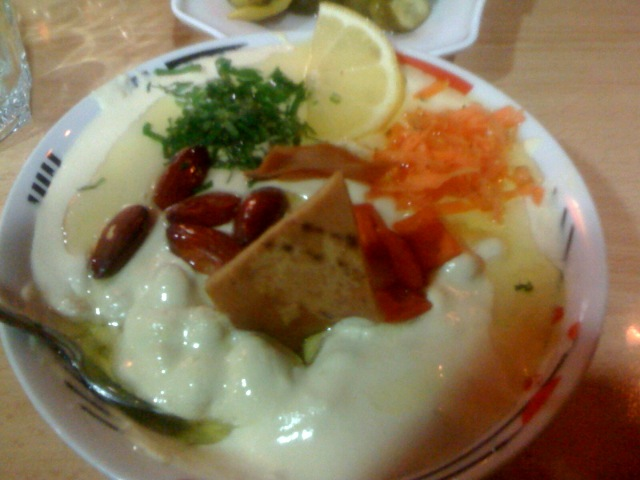
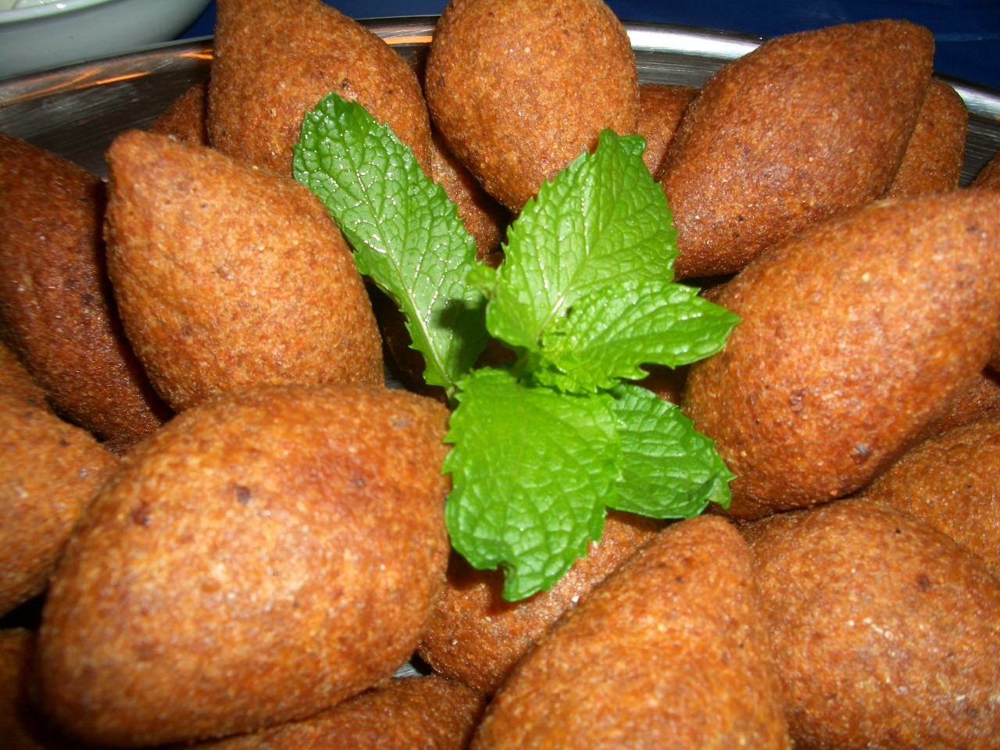
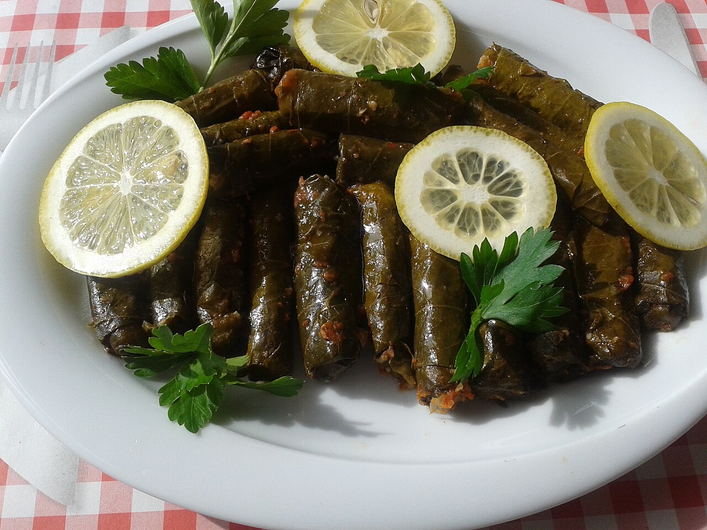
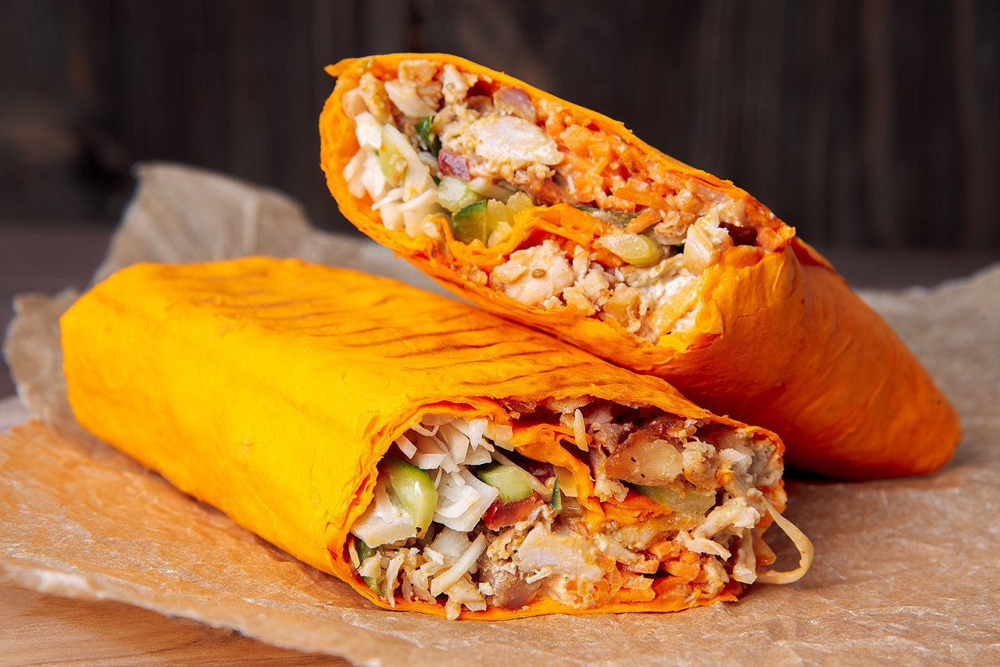
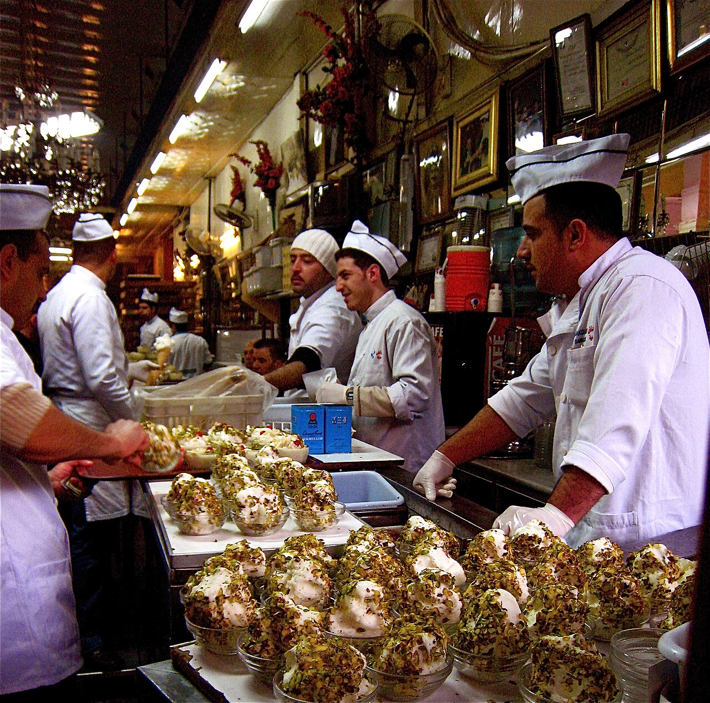

طبق رئيسي
الفتّة الشامية
خبز مقرمش مع الحمّص واللبن والسمن البلدي، طبق صباحي محبوب على الموائد الدمشقية.
نكهات المطبخ الدمشقي الأصيل من الأطباق الرئيسية إلى الحلويات الشهية.
مائدة غنيّة بالنكهات الأصيلة التي تشتهر بها مطابخ دمشق.

خبز مقرمش مع الحمّص واللبن والسمن البلدي، طبق صباحي محبوب على الموائد الدمشقية.

من الكبّة المقلية إلى الكبّة باللبن والكبّة السماقية، فنٌّ دمشقي بامتياز.

خضار وورق عنب محشوّة بالأرز واللحم، تُطهى بعناية وتُقدّم في المناسبات.

لحم متبّل يُشوى على السيخ الدوّار، تشتهر بها مطاعم دمشق وأكشاكها الشعبية.

طبقات رقيقة من العجين محشوّة بالفستق والجوز ومغموسة بالقطر، حلوى دمشقية عريقة.

بوظة مطّاطية مدقوقة باليد ومغطّاة بالفستق الحلبي، تجربة دمشقية لا تُنسى.
إرشادات بسيطة تجعل تجربتك مع المطبخ الدمشقي أكثر متعة.
جرّب تشكيلة المازة الدمشقية قبل الطبق الرئيسي.
تناول الطعام في بيت دمشقي قديم لتجربة أصيلة.
اختم وجبتك بالبقلاوة أو البوظة الشامية.